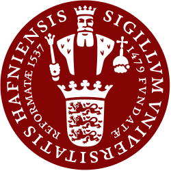

About Me
I am a third-year PhD candidate in Computer Science at the University of New South Wales (UNSW), Sydney, supervised by Prof. Flora Salim and Prof. Hao Xue. I am also a Student Researcher at Google Health, working on the intersection of multimodal foundation models and health AI.
My research lies at the intersection of wearable sensing, large language models, and intelligent health systems. I am broadly interested in human activity recognition, continuous glucose monitoring, multimodal health modeling, and LLM4Health, with a focus on interpretable reasoning, personalized insights, and intelligent agents for real-world healthcare applications.
News
- ZARA accepted to ACL 2026. See you in San Diego! (Apr 9, 2026)
- COMODO accepted to IMWUT / UbiComp 2026. See you in Shanghai! (Apr 1, 2026)
- Started as a Student Researcher at Google Health in Mountain View. (Feb 2, 2026)
- SensorLLM accepted to EMNLP 2025. See you in Suzhou! (Aug 20, 2025)
Education
University of New South Wales, Sydney
PhD in Computer Science
Advisors: Prof. Flora Salim and Prof. Hao Xue
Sep 2023 - Present
Northeastern University, Boston
Master of Science in Data Analytics Engineering
GPA: 3.917/4.0
2019 - 2021
Southern Medical University, Guangzhou
Bachelor of Engineering in Biomedical Engineering (Information Technology)
2015 - 2019
Experience
Student Researcher
Mentors: Dr. Ahmed Abdelhadi Metwally, Prof. Yuzhe Yang
Feb 2026 - Present
UNSW Sydney
Casual Academic (Tutor)
Feb 2025 - Present
Singapore University of Technology and Design
Visiting Researcher
Advisor: Prof. Wei Lu
Mar 2023 - Jul 2023

University of Copenhagen
Research Assistant (Part-time)
Advisor: Prof. Anders Søgaard
Aug 2021 - Aug 2022
Publications
*: equal contribution
Awards
Service
Beyond Research
Outside research, I am a certified freediver and enjoy spending time with my cat Basaka (“Berserker”).